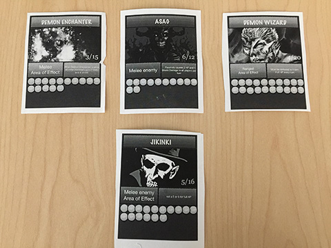

Kirby Cofino
Game Designer

Game Designer
My specialities are systems and game design. I work mainly with Unreal Engine and Unity3D.
Function Force is an educational game to teach middle-schoolers linear algebra (y=mx + b).
Title Screen.
Function Force was originally conceived during a game jam at the White House by my professors at American University.
Our task (myself and two other students) was to redesign the core concept and make it our own, over the course of a semester, for ETS to use as
part of an initiative of game based tests (developed in early 2017). I did all the level and puzzle design, as well as some of the art.
I was also key in the systems design, however it was a very collaborative process where we all built off of each other’s ideas, therefore I can’t claim all the credit.
Although the original function force was technically a shoot ‘em up game, in practice it played more like a puzzle game. We decided to emphasize the real-time nature of a shoot ‘em up game.
The slider based system for operating the gun using the mouse is at odds with controlling the ship itself.
Responding to moving threats would be very difficult for players.
Function Force was sponsored primarily as a game-based testing application, which is at odds with the dextrous nature of a shoot ‘em up game. Ideally, test administrators would be able to measure mastery over mathematical concepts distinctly from the skill involved in playing a game. How can we, as the designers, deliver a sterile testing environment while also making a fun shoot ‘em up?
Our solution was to split up levels into shooting sections and puzzle sections, with shooting sections containing soft teaching/testing moments and puzzle sections requiring only mastery over the mathematical content to progress.

Although players could avoid enemies, levels and content were designed to foster the use of a laser which follows the y=mx+b formula.
Scoring helps to record whether the player was able to destroy enemies or only avoid them.
ETS let us know that they wanted more testable moments, moments where they could tell whether or not the student had mastered the concept. This translated for me to designing content which was impossible without the correct formula plugged into your laser. With that in mind I came up with and designed the tunnel sub-sections found in some portions of the shooting sections.

Only the tunnel sections required mastery over the mathematical concept.
Can we include a progression system to introduce the content to players in a staggered manner? We’d like to foster engagement and support a staggered difficulty/learning curve.
Our solution was to introduce powerups (called satellites) which act as extra guns that fly next to your original ship, similar to upgrading your laser in other shoot ‘em ups. Originally we were thinking of sine wave lasers, reflective surfaces, and other ways to implement satellites (such as dropping them at locations as consumable), but decided on this implementation due to its synergy with shoot ‘em up mechanics and its usefulness and simplicity in both puzzle and shooting sections.

Power-ups (Satellites) which follow the player and can be adjusted via the testing content (y=mx+b).
The puzzle sections that we introduced had a scaling difficulty to them. As players collected more satellites the puzzles became harder because players would have to hit more "locks" with their lasers to progress. What was initially a simple puzzle mechanic became an interesting and powerful testing mechanism.

A puzzle section in the later stages of the game.
It requires players to hit 3 locking mechanisms at the same time to progress.
Having a progression system with these elements enabled:
-More complex puzzles to test the player’s understanding of core mathematical concepts
-The ability to teach and test a deeper understanding of y=mx+b
-More space for player improvement and play
By splitting up the game into shooting and puzzle sections, we were able to pace the experience such that it is constantly engaging.
This also allowed for a variety of testable/teachable moments through the level and enemy design.
Additionally, adding satellites introduced the ability to have more complex puzzles and difficult enemies, both of which increase player enjoyment.
We were effectively able to take a concept and effectively change it’s implementation to better suit both the client’s needs and the medium.
During the summer of 2017, I worked on an iteration of the HALEF system for ETS, as part of a full-time internship in San Francisco, California.
I worked primarily alone but was supported during some parts of the learning process by other team members.
You can read more about the process in this research paper we published
here.
HALEF is a multi-modal dialogue system; put simply, it is a computer system with which users can interact through spoken dialogue. Utilizing HALEF,
it is possible to have a unique conversation with a computer.
Previous iterations of HALEF suffered from multiple issues, ranging from unacceptable long load times (10+ minutes);
audio and animations becoming out of sync; and poor lip animations. When starting work on this system,
I was told that the priorities were to cut down on load times and keep the project open source (no proprietary software/techniques).
Due to the incredibly long load times, ETS was considering moving from Unity to other engines/javascript libraries (such as three.js)
Previous iteration of the HALEF avatar.
I had previously done research into mobile game applications and learned that web and mobile game development were very different from console or pc development. Every asset was created with its file size in mind, to reduce load times, leading to low poly models, 2D art, and low-resolution textures. With this in mind, I advocated for a low-poly 3D aesthetic, as 3D was central to the team’s future goals.

My texture palette for the project, a whopping 5kb on disk. A second palette was used for the
office itself, which was also ~5kb.
I used Blender, an open source 3D modeling program, as well as open source libraries such as Socket.IO to keep the project 100% open source.
Additionally, I researched ways to reduce Unity WebGL file size and possible alternative solutions to using Unity.
Luckily, I found that there was an upgrade to Unity’s WebGL functionality (the introduction of engine code stripping)
that helped immensely to reduce file size/load time. With the addition of a low-poly workplace and avatar, which I built from scratch,
we were good to go. I used Blender to model, texture, rig, and animate the avatar.

The low-poly feel, although unusual for a project of this nature, fit the goals and requirements very well.
Flat shading helped pull off the look and increase performance.
For the animation and sound problems, I decided that the best way to eliminate a discrepancy between audio and video would be to
re-architect the way in which sound and animations were called.
Rather than embedding the audio in the webpage and calling
for it using javascript, as the previous iteration had, I included the audio inside the Unity web blob.
Rather than animating the avatar on the update loop (via blendshape normalized values called by code), as the previous iteration had I controlled
animations by creating them in Blender and exporting them into Unity. This allowed me to play an entire animation with a single message,
which was useful for keeping audio and video in sync.
Mouths were animated using the Papagayo + JLipSync plugin
pipeline in Blender, which was a perfect solution for our needs. It offered a robust way to account for new dialogue,
while also becoming more efficient the longer we used the same models. This is because it works by setting up phoneme shapes,
such as 'o', or 'L', and interpolating values between those mouth shapes (rather than hand animating every mouth movement).
Papagayo is used to insert keyframes for mouth movement via an intuitive GUI.
Because I fundamentally changed the way in which the HALEF system interacts with the Unity web blob (due to my flow re-architecture and the Unity issued updated WebGL format) I had to change how messages were passed to the different parts of the system.
The Unity web blob lives inside the client's browser page via websocket messaging it interacts with the server,
which reads the scenario from a unique conversation file.
I first added hooks in the Unity web blob which could be accessed via javascript run on the HTML page, then I had the system pass a message to Unity depending on its status through the javascript running on the HTML page.
The system feedback loop is illustrated here. HALEF (the system) output phrases then based these outputs to Unity to represent it's decision to the user.
The user responded, which was carried back to HALEF via the freeswitch platform, etc.
By doing so I could tell HALEF to pass a message to Unity, which would fire both the necessary animation and play the necessary audio, eliminating any possibility for desynchronizing.
To get this project to work properly, I had to use WebSocket messaging, HTML, javascript, and C# to trigger actions and responses. Additionally, I had to use Blender to model, texture, rig, and animate the avatar; I was also responsible for creating mouth and lip animations which synced to pre-existing audio.
Doing the above, I developed a working, low load-time application, complete with a decent looking 3D model. It was an incredible
experience to be able to immerse myself in that pipeline, which was almost entirely new to me, while thinking critically about how
each part affected the final product, and what I could do to eliminate the bugs in the previous iteration. There was a lot of learning
on the job, but even so, I am proud that I was still able to deliver a product that both ETS and I approved.
Because of my contributions, I was offered a contract position to work part-time with ETS while I finished my master’s degree in Game Design at American University.
I am currently working on the next iteration of HALEF as I pursue my degree (shown here):

The current iteration of HALEF depicted, I am still continuing work on improving the system and the pipeline. We
are currently researching Mo-Cap inclusion for wider usability and adoption of the system.
4 Floors was conceived as a way to adapt a side-scroller with RPG elements to a tabletop format. Some core goals of the game
were accessibility to non-gamers and cooperative multiplayer gameplay.
4 Floors was developed in 3 weeks in 2016 with a team of 2 people:
myself on systems design and my teammate on art and graphic design.
Because I was designing for tabletop, simplicity was a core guiding principle. The game had to be usable and the mechanics learnable.
Analogue games tend to be more successful with simpler and fewer rules (computers aren’t there to walk players through the game and
calculate all the different equations for them). Additionally, this game was meant to be accessible to newer players or players who weren’t too
interested in heavy calculations and obscure rules.
In light of this, I had only a few rules- players started the game on the left side of the board, and if they made it to the right side, then they won. Simple right?
First iteration of 4 Floors. The board setup afforded some fantastic design opportunities, but also created problems.
Players would take on 2 columns of enemies at a time. Ranged units from the players’ party or the monsters’ party could attack from the 2nd column,
but melee units could only hit the column directly in front of them. By using skills smartly it was possible to damage groups that you couldn't reach
at the moment due to attacks that spanned 2 columns.
By making it to the last row players could fight and defeat a boss monster to win the game.

First iteration of 4 Floors with zones defined. The red divider indicates max interaction range (without unique skill exceptions).
Feedback indicated that our system for randomly generating columns (through dice rolls) was imbalanced, leading to unnecessarily difficult situations.
For example, it was very difficult to deal with a column of 5 units in front of a column of 5 ranged units.
Another core piece of feedback was that there was not much variation in combat. There were 2, perhaps 3, types of enemies which acted similarly.
People were interested in an expanded bestiary.
To deal with these issues, I decided to expand upon the narrative of the game and introduce new enemies. I had been inspired by ‘A Pattern Language’ by Christopher Alexander, a book about how architecture and intentional design can affect our everyday lives for the better, which got me thinking about how spaces in games can affect gameplay. In this case, it led me to introduce a room based combat system.
Players now draw a random 'room' card from the 'room' deck. This will tell players how many monsters will be in the room, as well as any additional effects
or bonuses the room provides.
Room-based exploration was important in a few ways, the first being that a room’s size will limit the number of creatures contained within it. Instead of every encounter having the possibility of a brutal number of enemies, staging these encounters inside a limited space allowed me to dictate what range of enemies players would face at a time. This was important for normalizing difficulty across all encounters. Finally, this change also was helpful for learnability and usability of the system-- players could see only what they could interact with at that moment.
Using rooms helped to teach the game to players, as well as clearly define the difficulty curve of the game.
Players wanted different kinds of enemies, which required different approaches to combat for success. To address this pleasure point I decided to include a more robust progression system, to give players more tools to work with, as well as an increased variety in enemies, to facilitate the use of these tools.

New, varied enemy types. Some deal damage per turn, some require being taken out from full HP in a single turn or they heal, etc.
New types of enemies were introduced which required different methods to overcome. This was tied into difficulty and progression through use of a 'floor' system. Players would clear a certain number of rooms per floor, fight a boss, then advance to the next floor. Later floors were more difficult and rewarding, allowing for me to design obstacles for different stages of character progression. For simplicity, I designed all special monster abilities to activate on rolls of 5 or 6. Sharing this across all enemy types help learnability and ease of use.
To deal with more powerful enemies and increase player engagement I updated character design with unique abilities and mechanics per class. Every player would have 'skill cards' which allowed single use, powerful abilities to be activated. Depending on which skill card was drawn players would have access to different abilities. This was done to limit player options and to encourage spontaneous and explorative play.
New, re-designed character sheets and progression system. The skill cards show which skills are gained upon increasing in level.
In addition to this, I included items which helped to customize characters and shore up weaknesses or emphasize strengths differently in each playthrough. Players would draw a random item from the item deck if certain conditions were met, such as defeating a boss. Players could trade items to support cooperative play.
Items were gained from accomplishing feats and had many uses.
By adding more content and refining existing mechanics, I shaped player options and increased both the depth and amount of options available to players.
Personally, I feel the game successfully conveyed an interesting take on a cooperative side-scroller experience while also containing dungeon crawling
and RPG elements. I would love to revisit the horizontal nature of initial iteration at some point, however, I feel that there were many problems, such as
learnability and clarity, that were improved with the move towards a room based system. It was definitely fun to design a dungeon crawling tabletop RPG.
Although my focus is design, I am proficient in 3D art. I am familiar with other kinds of art as well (2D, Pixel, etc).
Some work done for ETS to model, texture, rig, and animate 3D models.
placeholder
A bike from a post-apocalyptic future. Made with Blender and Quixel, imported into Unity3D -- 2016.
Made using Blender, Photoshop, and Unity3D -- 2016.
Made in collaboration with a classmate. I was responsible for the scene composition, terrain, gas station, and highway. Made using Blender, Photoshop, Quixel, and Unity3D -- 3 weeks, 2016.
For this game I worked as a 3D modeler and animator. The player character took me 1 week to model and animate.
I used Blender and Unity to produce this in 2017.
Inspiration was taken from 'That Dragon Cancer' for art style/direction.
I'm a musician, artist, designer, and avid gamer. I love creating new things and digging into juicy mechanics.
I have been involved in esports for many years. I've helped to host, as well as participate in, various Fighting Game tournaments (SSB4, SFIV, etc.). I have also been
a participant of larger esport events such as Evo or ECT. I've been a longtime follower and participant in the Dota 2 competitive scene,
most recently playing in Echo League. I believe that my familiarity and engagement with the competitive scene of many games has helped me to
understand how mechanics affect balance on a deep level and as such has helped me to become a better designer.
I'm the deputy chair of the local IGDA chapter (DC), and have helped to run
local game events for the past 2 years (SAAM Arcade, GGJ, P3M5 @ the Goethe Institute).
I'm currently working for Educational Testing Services and
pursuing my MA in Game Design at American University, I'll be graduating in May. My BA was obtained in Philosophy from SUNY Purchase in 2013.
Cheers!